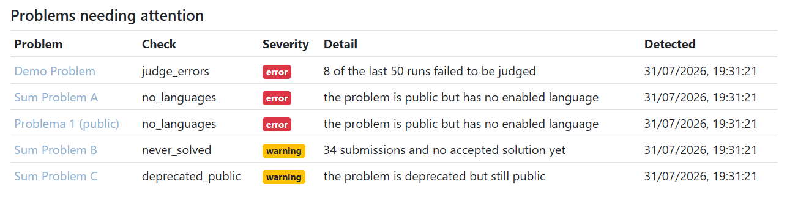

A problem on omegaUp can stop working after it is published, and nothing errors loudly. Students hit a wall. This is the project that goes looking for those problems every night.
What was wrong
The only signal that a problem had broken was somebody filing a report. That means the platform found out about broken problems from the people it had already failed, and only from the ones who bothered to say so.
The cases are not exotic. A validator starts crashing after an update, so correct solutions come back as a system error, and to the student it looks like their fault. A problem is public but has no language enabled, so it is listed, browsable and impossible to submit to. A problem has had dozens of attempts and nobody has ever solved it, which usually means the test data is wrong.
The four checks
| Check | Severity | What it looks for |
|---|---|---|
judge_errors |
error | In the last 24 hours, at least three submissions to one public problem came back as a judge or validator error, and those were at least 30% of what was judged. |
no_languages |
error | A public problem with no submission language enabled. |
never_solved |
warning | A public problem at least a week old with twenty or more submissions and none accepted. |
deprecated_public |
warning | A problem marked as retired that students can still see. |
Every threshold is a command line argument, and each one is validated before the job starts.

Remembering when it started
The useful part is in how findings are stored. There is one row per problem and check, and the job updates that row each night instead of adding a new one.
That is the difference between "this is broken" and "this has been broken for three weeks". A finding that stops appearing is marked resolved, not deleted, so the history stays.
ON DUPLICATE KEY UPDATE
-- Assigned before `resolved_at` is cleared, so it still
-- sees whether the finding had been resolved.
`first_detected_at` = CASE
WHEN `resolved_at` IS NULL THEN `first_detected_at`
ELSE VALUES(`last_seen_at`)
END,
`severity` = VALUES(`severity`),
`detail` = VALUES(`detail`),
`last_seen_at` = VALUES(`last_seen_at`),
`resolved_at` = NULL;The order of those assignments matters. MySQL applies them top to bottom, so the first one has to read
resolved_at before the last one clears it.
Two bugs I wrote, and how I found them
The clock. The step that closes findings which are no longer detected was reading the time after writing the new findings, not before. On a slow run, a finding written a moment earlier could be judged as "not seen this run" and closed immediately, so the job would report a problem as fixed at the instant it discovered it. The fix was to read the database clock once at the start and use that one timestamp everywhere. I found it because I wrote the test, and I trusted the fix because I put the bug back afterwards and watched the test go red.
The check that found nothing. On the first real run three of the four checks fired and judge_errors
found nothing. My first reaction was relief, which was wrong. It found nothing because the development
database had no submissions with that kind of error in it, so the check had never been exercised once. I
seeded the failure case and watched it fire before I trusted it. "No results" and "not working" look the
same from outside, and I now treat an empty result from a new check as unproven.
What review changed
Juan Pablo asked whether the judge error check should count every submission. It should not. A problem setter testing a broken validator on their own problem could push it over both thresholds while ordinary users were unaffected. Both checks that count submissions now only count normal ones.
He also asked that thresholds be validated before the job runs, and the reason is worth repeating. A negative window or a ratio above one makes a check return nothing. The job would then conclude that every open finding of that kind had been fixed and close them all. One typo by an operator would rewrite the history. For the same reason, if any single check raises, the whole run fails. Skipping a check is not safe here, because a skipped check looks like a clean one.
On the admin view he asked for the labels of each check and severity to live in one place, since they mirror enums on the server.
// Keying on the enums makes a new check or severity a compile error here
// instead of an untranslated cell on the dashboard.
const CHECK_TYPE_LABELS: Record<ProblemHealthCheckType, string> = {
[ProblemHealthCheckType.JudgeErrors]: T.problemHealthCheckJudgeErrors,
[ProblemHealthCheckType.NoLanguages]: T.problemHealthCheckNoLanguages,
[ProblemHealthCheckType.NeverSolved]: T.problemHealthCheckNeverSolved,
[ProblemHealthCheckType.DeprecatedPublic]:
T.problemHealthCheckDeprecatedPublic,
};The foundation paying for itself
This job needed no dashboard code to show that it ran. It goes through the
shared runner, with one phase per check, so it appeared on /admin/crons
with its run history and timings the first time it executed.
That was the moment the first project justified being built as a foundation instead of as one more feature.
Where it stands
All of it is merged. The table landed on 14 August, the data access layer on 29 August, the job on 17 September and the admin view on 7 October, which closed the parent issue. Juan Pablo asked me to add the job to the production schedule, and that change to omegaUp's deployment repository merged on 6 October, so it runs every day at 05:35.
The pull requests
Where findings are stored. One row per problem and check, which is what lets a finding keep the date it was first seen.
Data access for findings, split out of #10069 when Juan Pablo asked. It merged thirty four minutes after I opened it.
The nightly job and its four checks. It reads the clock once at the start and uses that one timestamp for everything, and if any single check fails the whole run fails, because skipping a check would mark its findings as fixed.
Juan Pablo asked whether submissions made by a problem setter testing their own problem should count as judge errors. They should not, and now only normal submissions do. He also asked that a mistyped threshold be rejected before the job runs, since a nonsense value makes a check find nothing and an operator typo
would then rewrite the history.
A "problems needing attention" table on the admin page, worst first, with the newest findings at the top of each group so a problem that broke last night is not buried under ones nobody has dealt with.
Juan Pablo asked for the labels to live in one place, since they mirror enums on the server. They are now a typed map, so adding a check without giving it a label fails the build.
The server half of #10069, split out and folded back the same day.
The issue
| Issue | What it asks for | Status |
|---|---|---|
| #10064 | Detect problems that silently stopped working | completed |